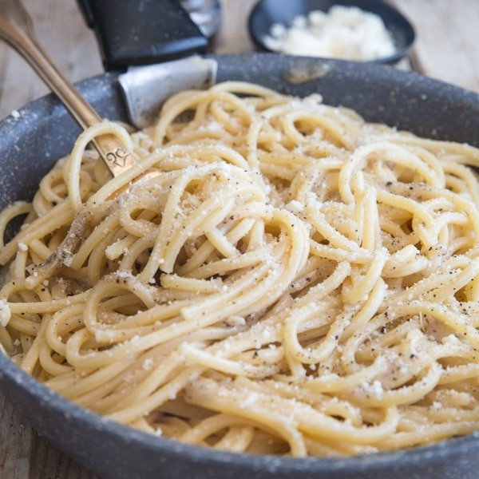

- Kosher salt
- 6 oz. pasta (such as egg tagliolini, bucatini, or spaghetti)
- 3 Tbsp. unsalted butter, cubed, divided
- 1 tsp. freshly cracked black pepper
- 3/4 cup finely grated Grana Padano or Parmesan
- 1/3 cup finely grated Pecorino
- Bring 3 quarts water to a boil in a 5-qt. pot. Season with salt; add pasta and cook, stirring occasionally, until about 2 minutes before tender. Drain, reserving 3/4 cup pasta cooking water.
- Meanwhile, melt 2 Tbsp. butter in a large heavy skillet over medium heat.
- Add pepper and cook, swirling pan, until toasted, about 1 minute.
- Add 1/2 cup reserved pasta water to skillet and bring to a simmer. Add pasta and remaining butter. Reduce heat to low and add Grana Padano, stirring and tossing with tongs until melted.
- Remove pan from heat; add Pecorino, stirring and tossing until cheese melts, sauce coats the pasta, and pasta is al dente. (Add more pasta water if sauce seems dry.)
- Transfer pasta to warm bowls and serve.
- Calories (kcal): 640.9
- Calories from Fat: 41.5
- Fat (g): 29.5
- Saturated Fat (g): 17
- Cholesterol (mg): 71.8
- Carbohydrates (g): 64.9
- Dietary Fiber (g): 4
- Total Sugars (g): 1.3
- Net Carbs (g): 60.9
- Protein (g): 26.9
- Sodium (mg): 560.6
